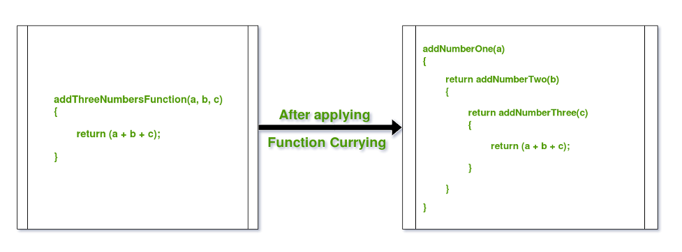

- It also has length property like an array.
- The call() method calls a function with a given this value and arguments
provided individually.
- Apply() does the same but the argument goes like an array. Ex:
apply([argument]).
Example:
function sayHello(){
return `Hello, my name is ${ this.name }`; }
const clark = { name: 'Clark' };
sayHello.call(clark);
<< 'Hello, my name is Clark’
- It is easily achieved by placing parentheses at the end of the function definition (remember we use parentheses to invoke a function). The function also has to be made into an expression, which is done by placing the whole declaration inside parentheses.<
Example:
(function(){
const temp = 'World'; console.log(`Hello ${temp}`); })();
<< 'Hello World'
Example:
function party(){
console.log('Wow this is amazing!'); party = function(){
console.log('Been there, got the T-Shirt'); }
}
Every time the function is called after the first time, it will log the message “Been there, got the T-Shirt”:
- A recursive function is one that invokes itself until a certain
condition is met. Repeat itself.
- It is used with formulas (numbers)
Example:
function factorial(n) { if (n === 0) {
return 1; }
else {
return n * factorial(n - 1); }
}
- A promise represents the future result of an asynchronous operation.
- When a promise is created, it calls an asynchronous operation and is
then said to be pending.
- Once settled can result in two different outcomes:
Resolved: the asynchronous operation was completed successfully.
Rejected: the asynchronous operation didn’t work as expected, wasn’t
successfully completed or resulted in an error.
Example:
const promise = new Promise( (resolve, reject) => { // initialization code
goes here
if (success) {
resolve(value);}
else {
reject(error); }
});
- A closure gives you access to an outer function’s scope from an inner function. In JavaScript, closures are created every time a function is created, at function creation time.
Example:
function makeFunc() {
var name = 'Mozilla';
function displayName() {
alert(name);}
return displayName; }
var myFunc = makeFunc();
myFunc();
- A generator is created by placing an asterisk (*) after the function
keyword.
- A generator function will return an iterator object that provides a
next() method, which returns the next value in a sequence that is defined
in the generator function.
Example:
function* generator(i) {
yield i;
yield i + 10;}
const gen = generator(10);
console.log(gen.next().value); //expected output: 10
console.log(gen.next().value); // expected output: 20
- Functional programming involves breaking processes down into steps that can be applied as a series of functions.
- Pure functions are functions that don’t rely on the state of the code
they are called from, have no side-effects, and always give the same
result when given the same arguments (referential transparency).
- The output should not change.
- Currying or partial application is the process of applying one argument
at a time to a function. A new function is returned until all the
arguments have been used.
- It is a technique of simplifying a multi-valued argument function into
single-valued argument multi-functions.

- Ajax is a technique that allows web pages to communicate asynchronously
with a server, and it dynamically updates web pages without reloading.
The data can be sent in many forms, but it is usually in JSON.
An example of Ajax is the weather page created last semester.
- Ajax can be used for communicating with external APIs. Ajax requests can be made using the Fetch API.
Example:
fetch('https://example.com/data')
then( // code that handles the response )
catch( // code that runs if the server returns an error )
- The Response interface allows you to control the response received from a request or to create your own response objects.
- The Request interface allows you to create a request object that
contains information about the request being made, such as the URL and
headers.
Requests can retrieve data using a GET request, or send data using a POST
request.
- The Headers interface allows you to create HTTP headers that can be added to a request or response object.
- The FormData interface makes it easier to send data from forms.
Helps to reduce the amount of code needed when submitting forms.